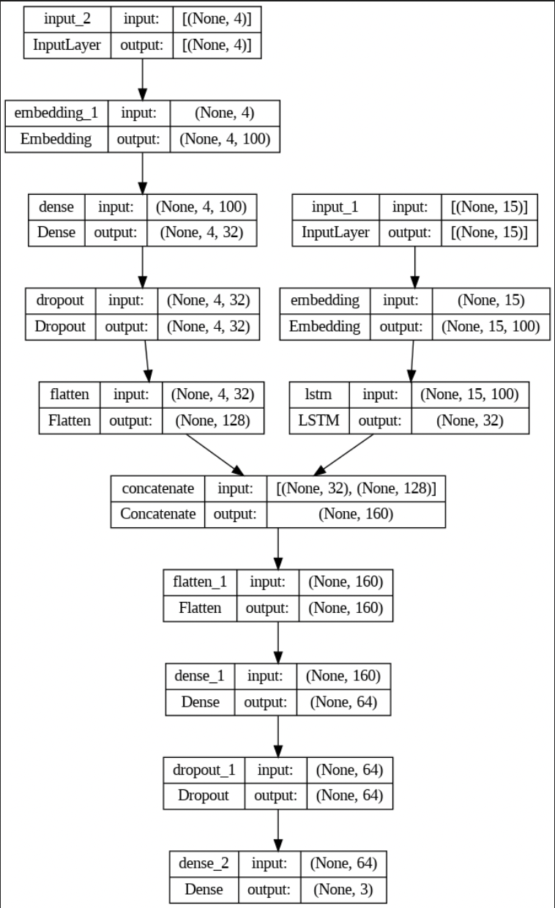
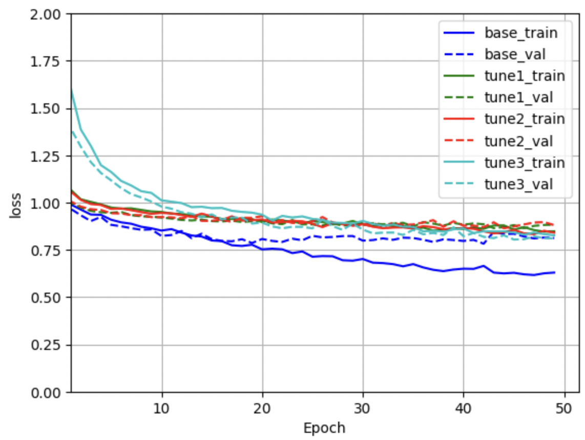

Stance Detection using RNN
In this project, I built a Stance detection system for tweets posted on the social media site twitter (currently known as X). Given a tweet and a particular topic, the Stance detection system will be able to decipher whether the the tweet is for, against or neutral towards the topic. In order to do this we will build a deep learning classification model which will take in two inputs - The tweet and The target topic - and classify the tweet into one of the following classes i.e stances - FAVOR, AGAINST or NONE. We will limit our model to consider only 5 politically charged target topics which are listed below:
1) Atheism
2) the Feminist Movement \
3) Climate Change is a Real Concern \
4) Legalization of Abortion \
5) Hillary Clinton
The RNN model comprises of two input layers: one for tweets and another for targets, both limited to maximum lengths of 15 and 4 respectively, determined during tokenization. Each input type is processed independently before being combined.
Both inputs pass through separate embedding layers using pre-trained GloVe embeddings with trainable=False to utilize transfer learning. This approach ensures the pre-trained weights remain fixed throughout, enhancing model stability and performance.
For the tweet input, an LSTM layer with 32 units, 0.5 dropout, and 0.3 recurrent dropout captures long-range dependencies in text, crucial for understanding complex patterns. LSTM was chosen over GRU for its ability to maintain information over longer sequences.
The target input is directed through a Dense layer with 32 units and 50% dropout, omitting LSTM due to its fixed and limited sequence variations. This preserves word information while learning patterns efficiently.
The outputs from both LSTM and the Dense layer are concatenated, flattened into a 1-dimensional tensor, and passed through a Dense layer with 64 units and ReLU activation. ReLU ensures rapid convergence without overfitting, essential for a small dataset, followed by 50% dropout to prevent overfitting.
The final output layer, using softmax activation with 3 units, provides probabilities for each class, essential for multi-class classification.

Stage 1 Tuning:
To address overfitting, we increased regularization by raising the LSTM dropout rates and setting the fully connected layer dropout to 0.8. To maintain learning capacity, we added another Dense-Dropout layer pair and applied L2 regularization with a strength of 0.01 to the Dense layers. These changes helped reduce overfitting, with training and validation metrics aligning more closely as epochs progressed.
Stage 2 Tuning:
Despite reduced overfitting, the model's categorical accuracy and F1-score ranged from 0.5 to 0.55, indicating average performance. We introduced an Attention layer to enhance focus on specific parts of the sequence, improving subtle pattern detection and dependency capture. This layer's output was concatenated with the original LSTM output and the Dense layer output of the target input. However, this adjustment did not significantly improve performance.
Stage 3 Tuning:
To further enhance model performance, we added BatchNormalization layers after concatenation and before every Dense layer. BatchNormalization stabilizes the model by normalizing activations from the previous layer, allowing for quicker convergence and better generalization. This step aimed to standardize the combined outputs from various layers, improving data processing efficiency.
You can see the model performance after each stage of tuning in the below image.

Go to Project!